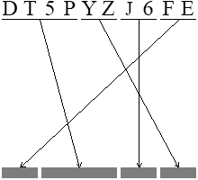

Contents:
CGI stands for Common Gateway Interface, which is, strictly speaking, a specification of one particular way the HTTP server, such as Apache, may communicate with an external program (a CGI script, although all this has nothing to do with scripting) to serve some (or even all, which we strongly discourage) requests. Once the server receives a request in which the URI is a one to be served via CGI, it runs the CGI program, providing it with all necessary data, and uses its output as the content to be sent back to the client.
The request data and some additioinal information are mainly passed to the CGI program via its environment variables, but in case a POST request is being served, the standard input stream is used as well.
So, basically what CGI program does is getting request data from both the environment and the standard input, performing operations it is designed to perform, and printing to its standard output the response to be sent to the client. And yes, it gets launched again and again, once per every request, as it only serves a single request per single run. Well, this is not really a problem in case, first, the program is written reasonably, and, second, the whole site is implemented using the brain.
Thalassa CGI program is named thalcgi.cgi; you can rename it
if necessary. Please note it is an executable binary, and, if you didn't
change the default build mode, it is perhaps a statically linked one.
In brief, the program is able to generate HTML pages, keep work sessions using a cookie, let users register, get single-use passwords, log in and log out (but it can also work with anonymous users as well, depending on the configuration), send emails to some predefined email addresses with a site-wide contact form, create new comments on pages that are properly configured, edit and delete comments (according to the users' permissions), and perform comment moderation by showing and hiding comments. The program performs a graphical CAPTCHA test whenever it creates a new working session.
Thalassa CGI is configured with a single configuration file, which is in
ini format. The file, named
thalcgi.ini, is placed in the same directory with the
thalcgi.cgi binary.
It is important to note that all HTML code the CGI emits it composed using templates and snippets from the configuration file. No HTML code is hardcoded into the program, except for the error page displayed in case there are problems with the configuration file, so the program simply can not get any snippets from it.
Besides that, thalcgi.cgi uses its own “database” to store
sessions, user accounts and some other information it needs. The database
is effectively a directory which must be writable for the UID the CGI
program runs with; it will create all necessary subdirectories on its own,
but sometimes you may need to edit files there. The database must be kept
strictly private as it contains a lot of sensitive things including
user passwords (okay, the passwords are
single-use, so in case you suspect the database to be compromised you can
just wipe them all and ask your users to request new passwords... but this
is not a reason to be careless). In the most cases the
database is located outside of your web tree, but sometimes you have to
place it inside the web tree, e.g., when the outer space is not available
for writing. If this is the case, make sure your Apache or whatever HTTP
server refuses to access the database directory.
The simplest thing the Thalassa CGI program can do is to serve dynamically generated pages in response for HTTP GET requests.
BTW, there's something to say about the very concept of “pages”. The CGI program is used to get a lot of information from its path component of the URI, but from the user's point of view these pages might look simply like, well, web pages; the user doesn't even have to realize they are dynamically generated.
Suppose your site is http://www.example.com and you put
thalcgi.cgi into a subdirectory named foo/.
The shortest URL you can use to reach the program is then
http://www.example.com/foo/thalcgi.cgi, in this case the path
component of the URI (from the CGI program's point of view) is
empty. However, with CGIs you can always think about the CGI
program as a virtual “directory” with subdirectories and even with files
in them. Hence, all the following URLs will end up launching the same CGI
program:
http://www.example.com/foo/thalcgi.cgi/bar http://www.example.com/foo/thalcgi.cgi/bar/buzz http://www.example.com/foo/thalcgi.cgi/abracadabra http://www.example.com/foo/thalcgi.cgi/abra/cadabra.html
— and so on, you've got the idea. In these cases, the path component
is no longer empty, for these examples it will be /bar,
/bar/buzz, /abracadabra and
/abra/cadabra.html, respectively.
The Thalassa CGI program can be configured to serve any such URL as a “page” (in its own specific sense of the term “page”). Furthermore, it can be configured to serve a whole “tree” with a common first path element; in this case the rest of the path elements will be available through the macroprocessor.
In its simpest case, such page doesn't require a session to be active, doesn't expect a POST request and generally does nothing but display the desired HTML. Even such a simple page may still be useful — e.g., to display some status information that changes dynamically.
Please remember that there must be a reason to serve an HTML page this way:
at least some information on it must be new each time it is
requested and displayed. Otherwise, just use
the thalassa program
itself, not the CGI, to generate your page and serve it as a completely
static one.
The program is capable of creating and managing work sessions. To
have an active session means having a cookie named
thalassa_sessid, which stores (guess what, heh) the session ID
that must exist. This is the only cookie used by Thalassa CGI; it is
intended to only be set upon an explicit user's request.
Pages that only serve GET requests in most cases don't need the client to have an active session. However, you can configure such a page to require the session to be active, by setting the respective parameter in the page's configuration. Going furhter this way, you can configure all pages served by your CGI to require an active session, but this is not recommended.
Please note that setting up an active session requires the user to pass a graphical CAPTCHA test. In the present version this is not avoidable, that is, you can't disable the CAPTCHA. This is because every session is, technically, a file stored in the CGI's database directory; having no CAPTCHA here would let anyone to create millions of such files thus imposing a risk of a denial-of-service. That's why it is highly unlikely that there will ever be the possibility to work without the CAPTCHA.
Having a working session, the user may prefer to stay anonymous, or to log into the system with an existing or a new account (that is, to sign up for a new account; the user gets logged in during the signup process). The authentication is done with a user name (login name) and a single-used password. Passwords are sent by email; the first one is sent as a part of a signup process, so that the email gets verified.
Users can have different permissions, and the special “anonymous” user (which is assumed when there's an active session but noone logged in) may have certain permissions too. With some of the macros available for building a page body, you can check the user permissions and decide what content to show (e.g. to show a “permission denied” notice instead of the actual content).
In case you need something interactive, which is what the Thalassa CGI program is written for, you need some of your pages to accept POST requests. None of them are accepted without the active session; the only exception is the request that contains the CAPTCHA answer and actually starts and sets up a new session.
To accept POST requests, a page must be marked as POST-capable in the
configuration, and a special parameter named action must be
given for the page. The action consists of its name and
arguments, much like a command line; there's a fixed set of action names
supported by the CGI program, each of them expects a fixed set of form
input values. Each action expects its own set of form fields to be
submitted in the POST request; names of the fields are hardcoded, so (at
least in the present version) they can't be changed. We'll later explain
all existing actions together with the data they expect.
 The CAPTCHA test is performed by Thalassa CMS by generating a picture with a string of chars and an arrow-based permutation instruction to be performed by the user. The properly performed permutation gives the correct answer for the challenge. In the present version of Thalassa, this is the only possible type of challenge.
The CAPTCHA is implemented completely inside the CGI program; both the challenge and the answer are generated every time the CGI needs to show the CAPTCHA to the user. Thanks to a simple cryptographic-based technique, there's no need to store the answer anyhow. Instead, the program takes the correct CAPTCHA response, the secret value, the current time value, the IP address of the client, the randomly-generated single use number (also known as nonce), concatenates them all, takes an MD5 sum of the concatenation result, and sends the sum along with the challenge, as well as with the time, the IP and the nonce, to the user, embedded into the displayed page (the challenge is embedded as a base64-encoded image, and all the rest — as hidden form input values). Once the response is received, the program sees the response the user gave, the IP, the time value, the nonce and the MD5 sum — this time as field values submitted through the form. It then concatenates the user's response with the secret value (which is supposed to only be known to the program, not to anyone else), the IP, the time and the nonce, takes an MD5 of them and checks whether it is the same as the value from the hidden field.
Besides that, the time value is checked against the current system time; only a certain (configurable) amount of time is allowed to solve the captcha, and if more time passes, the CAPTCHA test fails even if the MD5 check passes.
If everything else looks okay (and only in this case! this prevents polluting the local file system), the pair time+nonce is stored in the “database” to make it impossible to reuse the nonce. The test fails in case the pair is already there. Stored pairs older than the configured CAPTCHA timeout are removed automatically; this cleanup is performed every time when a new pair is actually stored.
Some people may say MD5 is not cryptographically strong, it is broken, so it is possible for an attacker to... err... do something. Okay, we wouldn't argue that something like that may be possible, but what we're absolutely sure is that noone can do this quickly enough, even having all supercomputers of the world. However, it might be not a bad idea to change your secret value from time to time.